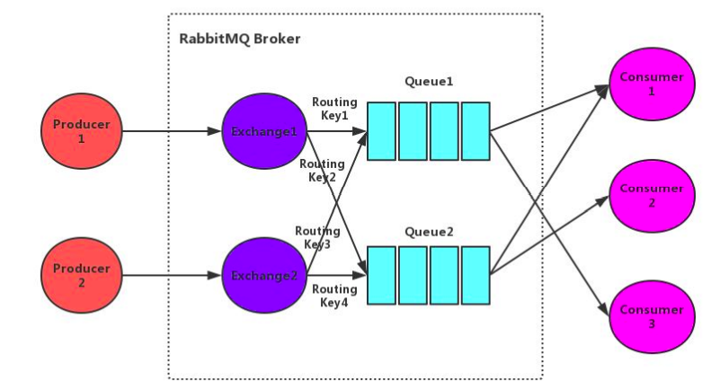
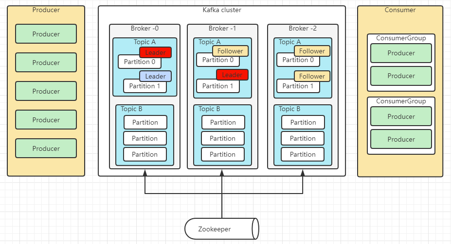

目录
简述RabbitMQ的架构设计
RabbitMQ如何确保消息发送 ？ 消息接收？
RabbitMQ事务消息
RabbitMQ死信队列、延时队列
RabbitMQ镜像队列机制
简述kafka架构设计
kafka怎么处理消息顺序、重复发送、重复消费、消息丢失
Kafka在什么情况下会出现消息丢失及解决方案？
Kafka是pull？push？优劣势分析
Kafka中zk的作用
简述kafka的rebalance机制
Kafka的性能好在什么地方
消息队列如何保证消息可靠传输
简述RabbitMQ的架构设计

Broker：rabbitmq的服务节点
Queue：队列，是RabbitMQ的内部对象，用于存储消息。RabbitMQ中消息只能存储在队列中。生产者投递消息到队列，消费者从队列中获取消息并消费。多个消费者可以订阅同一个队列，这时队列中的消息会被平均分摊(轮询)给多个消费者进行消费，而不是每个消费者都收到所有的消息进行消费。(注意：RabbitMQ不支持队列层面的广播消费，如果需要广播消费，可以采用一个交换器通过路由Key绑定多个队列，由多个消费者来订阅这些队列的方式。
Exchange：交换器。生产者将消息发送到Exchange，由交换器将消息路由到一个或多个队列中。如果路由不到，或返回给生产者，或直接丢弃，或做其它处理。
RoutingKey：路由Key。生产者将消息发送给交换器的时候，一般会指定一个RoutingKey，用来指定这个消息的路由规则。这个路由Key需要与交换器类型和绑定键(BindingKey)联合使用才能最终生效。在交换器类型和绑定键固定的情况下，生产者可以在发送消息给交换器时通过指定RoutingKey来决定消息流向哪里。
Binding：通过绑定将交换器和队列关联起来，在绑定的时候一般会指定一个绑定键，这样RabbitMQ就可以指定如何正确的路由到队列了。
交换器和队列实际上是多对多关系。就像关系数据库中的两张表。他们通过BindingKey做关联(多对多关系表)。在投递消息时，可以通过Exchange和RoutingKey(对应BindingKey)就可以找到相对应的队列。
信道：信道是建立在Connection之上的虚拟连接。当应用程序与Rabbit Broker建立TCP连接的时候，客户端紧接着可以创建一个AMQP信道(Channel)，每个信道都会被指派一个唯一的D。RabbitMQ处理的每条AMQP指令都是通过信道完成的。信道就像电缆里的光纤束。一条电缆内含有许多光纤束，允许所有的连接通过多条光线束进行传输和接收。
RabbitMQ如何确保消息发送？消息接收？
发送方确认机制：
信道需要设置为confirm模式，则所有在信道上发布的消息都会分配一个唯一ID。
一旦消息被投递到queue（可持久化的消息需要写入磁盘），信道会发送一个确认给生产者（包含消息唯一ID）。
如果RabbitMQ发生内部错误从而导致消息丢失，会发送一条nack（未确认）消息给生产者。
所有被发送的消息都将被confirm（即ack）或者被nack一次。但是没有对消息被confirm的快慢做
任何保证，并且同一条消息不会既被confirm又被nack
发送方确认模式是异步的，生产者应用程序在等待确认的同时，可以继续发送消息。当确认消息到达生产者，生产者的回调方法会被触发。
ConfirmCallback接口：只确认是否正确到达Exchange中，成功到达则回调
ReturnCallback接口：消息失败返回时回调
接收方确认机制：
消费者在声明队列时，可以指定noAck参数，当noAck=false时，RabbitMQ会等待消费者显式发回ack信号后才从内存(或者磁盘，持久化消息)中移去消息。否则，消息被消费后会被立即删除。
消费者接收每一条消息后都必须进行确认（消息接收和消息确认是两个不同操作）。只有消费者确认了消息，RabbitMQ才能安全地把消息从队列中删除。
RabbitMQ不会为未ack的消息设置超时时间，它判断此消息是否需要重新投递给消费者的唯一依据是消费该
消息的消费者连接是否已经断开。这么设计的原因是RabbitMQ允许消费者消费一条消息的时间可以很长。保证数据的最终一致性；
如果消费者返回ack之前断开了链接，RabbitMQ会重新分发给下一个订阅的消费者。（可能存在消息重复消费的隐患，需要去重）
RabbitMQ事务消息
通过对信道的设置实现
- channel.txSelect()；通知服务器开启事务模式；服务端会返回Tx.Select-Ok
- channel.basicPublish；发送消息，可以是多条，可以是消费消息提交ack
- channel.txCommit()提交事务；
- channel.txRollback()回滚事务；
消费者使用事务：
- autoAck=false，手动提交ack，以事务提交或回滚为准；
- autoAck=true，不支持事务的，也就是说你即使在收到消息之后在回滚事务也是于事无补的，队列已经把消息移除了
如果其中任意一个环节出现问题，就会抛出IoException异常，用户可以拦截异常进行事务回滚，或决定要不要重复消息。事务消息会降低rabbitmq的性能
RabbitMQ死信队列、延时队列
- 消息被消费方否定确认，使用channel.basicNack或channel.basicReject，并且此时requeue属性被设置为false。
- 消息在队列的存活时间超过设置的TTL时间。
- 消息队列的消息数量已经超过最大队列长度。
那么该消息将成为“死信”。“死信”消息会被RabbitMQ进行特殊处理，如果配置了死信队列信息，那么该消息将会被丢进死信队列中，如果没有配置，则该消息将会被丢弃
为每个需要使用死信的业务队列配置一个死信交换机，这里同一个项目的死信交换机可以共用一个，然后为每个业务队列分配一个单独的路由key，死信队列只不过是绑定在死信交换机上的队列，死信交换机也不是什么特殊的交换机，只不过是用来接受死信的交换机，所以可以为任何类型【Direct、Fanout、Topic】
TTL：一条消息或者该队列中的所有消息的最大存活时间
如果一条消息设置了TTL属性或者进入了设置TTL属性的队列，那么这条消息如果在TTL设置的时间内没有被消费，则会成为“死信”。如果同时配置了队列的TTL和消息的TTL，那么较小的那个值将会被使用。
只需要消费者一直消费死信队列里的消息
RabbitMQ镜像队列机制
镜像queue有master节点和slave节点。master和slave是针对一个queue而言的，而不是一个node作为所有queue的master，其它node作为slave。一个queue第一次创建的node为它的master节点，其它node为slave节点。
无论客户端的请求打到master还是slave最终数据都是从master节点获取。当请求打到master节点时，master节点直接将消息返回给client，同时master节点会通过GM（Guaranteed Multicast）协议将queue的最新状态广播到slave节点。GM保证了广播消息的原子性，即要么都更新要么都不更新。
当请求打到slave节点时，slave节点需要将请求先重定向到master节点，master节点将将消息返回给client，同时master节点会通过GM协议将queue的最新状态广播到slave节点。
如果有新节点加入，RabbitMQ不会同步之前的历史数据，新节点只会复制该节点加入到集群之后新增的消息。
简述kafka架构设计

Consumer Group：消费者组，消费者组内每个消费者负责消费不同分区的数据，提高消费能力。逻辑上的一个订阅者。
Topic：可以理解为一个队列，Topic将消息分类，生产者和消费者面向的是同一个Topic。
Partition：为了实现扩展性，提高并发能力，一个Topic以多个Partition的方式分布到多个Broker上，每个Partition是一个有序的队列。一个Topic的每个Partition都有若干个副本（Replica），一个Leader和若干个Follower。生产者发送数据的对象，以及消费者消费数据的对象，都是Leader。Follower负责实时从Leader中同步数据，保持和Leader数据的同步。Leader发生故障时，某个Follower还会成为新的Leader。
Offset：消费者消费的位置信息，监控数据消费到什么位置，当消费者挂掉再重新恢复的时候，可以从消费位置继续消费。
Zookeeper：Kafka集群能够正常工作，需要依赖于Zookeeper，Zookeeper帮助Kafka存储和管理集群信息。
kafka怎么处理消息顺序、重复发送、重复消费、消息丢失
Kafka在什么情况下会出现消息丢失及解决方案？
1）消息发送
1、ack=0，不重试
producer发送消息完，不管结果了，如果发送失败也就丢失了。
2、ack=1，leader crash
producer发送消息完，只等待lead写入成功就返回了，leader crash了，这时follower没来及同步，消息丢失。
3、unclean.leader.election.enable配置true
允许选举ISR以外的副本作为leader,会导致数据丢失，默认为false。producer发送异步消息完，只等待lead写入成功就返回了，leader crash了，这时ISR中没有follower，leader从OSR中选举，因为OSR中本来落后于Leader造成消息丢失。
解决方案：
1、配置：ack=all / -1,tries > 1,unclean.leader.election.enable : false
producer发送消息完，等待follower同步完再返回，如果异常则重试。副本的数量可能影响吞吐量。
不允许选举ISR以外的副本作为leader。
2、配置：min.insync.replicas > 1
副本指定必须确认写操作成功的最小副本数量。如果不能满足这个最小值，则生产者将引发一个异常(要么是
NotEnoughReplicas，要么是NotEnoughReplicasAfterAppend)。
min.insync.replicas和ack更大的持久性保证。确保如果大多数副本没有收到写操作，则生产者将引发异常。
3、失败的offset单独记录
producer发送消息，会自动重试，遇到不可恢复异常会抛出，这时可以捕获异常记录到数据库或缓存，进行
单独处理。
2）消费
先commit再处理消息。如果在处理消息的时候异常了，但是offset已经提交了，这条消息对于该消费者来说就是丢失了，再也不会消费到了。
3）broker的刷盘
减小刷盘间隔
Kafka是pull？push？优劣势分析
pull模式：
- 根据consumer的消费能力进行数据拉取，可以控制速率
- 可以批量拉取、也可以单条拉取
- 可以设置不同的提交方式，实现不同的传输语义
缺点：如果kafka没有数据，会导致consumer空循环，消耗资源
解决：通过参数设置，consumer拉取数据为空或者没有达到一定数量时进行阻塞
push模式：不会导致consumer循环等待
缺点：速率固定、忽略了consumer的消费能力，可能导致拒绝服务或者网络拥塞等情况
Kafka中zk的作用
/brokers/ids：临时节点，保存所有broker节点信息，存储broker的物理地址、版本信息、启动时间等，节点名称为brokerID，broker定时发送心跳到zk，如果断开则该brokerID会被删除
/brokers/topics：临时节点，节点保存broker节点下所有的topic信息，每一个topic节点下包含一个固定的partitions节点，partitions的子节点就是topic的分区，每个分区下保存一个state节点、保存着当前leader分区和ISR的brokerID，state节点由leader创建，若leader宕机该节点会被删除，直到有新的leader选举产生、重新生成state节点
/consumers/[group_id]/owners/[topic]/[broker_id-partition_id]：维护消费者和分区的注册关系
/consumers/[group_id]/offsets/[topic]/[broker_id-partition_id]：分区消息的消费进度Offset
client通过topic找到topic树下的state节点、获取leader的brokerID，到broker树中找到broker的物理地址，但是client不会直接连接zk，而是通过配置的broker获取到zk中的信息
简述kafka的rebalance机制
consumer group中的消费者与topic下的partion重新匹配的过程
何时会产生rebalance：
- consumer group中的成员个数发生变化
- consumer消费超时
- group订阅的topic个数发生变化
- group订阅的topic的分区数发生变化
coordinator：通常是partition的leader节点所在的broker，负责监控group中consumer的存活，consumer维持到coordinator的心跳，判断consumer的消费超时
- coordinator通过心跳返回通知consumer进行rebalance
- consumer请求coordinator加入组，coordinator选举产生leader consumer
- leader consumer从coordinator获取所有的consumer，发送syncGroup(分配信息)给到coordinator
- coordinator通过心跳机制将syncGroup下发给consumer
- 完成rebalance
leader consumer监控topic的变化，通知coordinator触发rebalance
如果C1消费消息超时，触发rebalance，重新分配后、该消息会被其他消费者消费，此时C1消费完成提交offset、导致错误
解决：coordinator每次rebalance，会标记一个Generation给到consumer，每次rebalance该Generation会+1，consumer提交offset时，coordinator会比对Generation，不一致则拒绝提交
Kafka的性能好在什么地方
kafka不基于内存，而是硬盘存储，因此消息堆积能力更强
顺序写：利用磁盘的顺序访问速度可以接近内存，kafka的消息都是append操作，partition是有序的，节省了磁盘的寻道时间，同时通过批量操作、节省写入次数，partition物理上分为多个segment存储，方便删除
传统：
- 读取磁盘文件数据到内核缓冲区
- 将内核缓冲区的数据copy到用户缓冲区
- 将用户缓冲区的数据copy到socket的发送缓冲区
- 将socket发送缓冲区中的数据发送到网卡、进行传输
零拷贝：
- 直接将内核缓冲区的数据发送到网卡传输
- 使用的是操作系统的指令支持
kafka不太依赖jvm，主要理由操作系统的pageCache，如果生产消费速率相当，则直接用pageCache交换数据，不需要经过磁盘IO
消息队列如何保证消息可靠传输
消息可靠传输代表了两层意思，既不能多也不能少。
为了保证消息不多，也就是消息不能重复，也就是⽣产者不能重复⽣产消息，或者消费者不能重复消费消息
- ⾸先要确保消息不多发，这个不常出现，也⽐较难控制，因为如果出现了多发，很⼤的原因是⽣产 者⾃⼰的原因，如果要避免出现问题，就需要在消费端做控制
- 要避免不重复消费，最保险的机制就是消费者实现幂等性，保证就算重复消费，也不会有问题，通过幂等性，也能解决⽣产者重复发送消息的问题
消息不能少，意思就是消息不能丢失，⽣产者发送的消息，消费者⼀定要能消费到，对于这个问题，就要考虑两个⽅⾯
- ⽣产者发送消息时，要确认broker确实收到并持久化了这条消息，⽐如RabbitMQ的confirm机 制，Kafka的ack机制都可以保证⽣产者能正确的将消息发送给broker
- broker要等待消费者真正确认消费到了消息时才删除掉消息，这⾥通常就是消费端ack机制，消费者接收到⼀条消息后，如果确认没问题了，就可以给broker发送⼀个ack，broker接收到ack后才会删除消息

...
...
Copyright 2021 sunfy.top ALL Rights Reserved